_name
yuki540
_age
20
_birthday
1996/11/09
_location
Wakayama, Japan
_job
専門学生(3年)
_likes
Live2D, Electron, Cordova, Node.js, xss
yuki540ってどんな人？
「さくら荘のペットな彼女」を読み、プログラマになることを決意しました。
憧れのエンジニアは、みゆっきさんで、好きな声優は多すぎてお答えできません。
Web関連の技術が好きで、将来もWeb関連の企業で就職することを望んでいます。
死んだ目で和歌山から2時間かけて、大阪へ向かっている人がいたら、それが私です。
satella.io
Live2Dライクなオープンソースソフトウェア
「絵を動かす。心を動かす。」
「イラストに命を吹き込む」技術を開発し、OSSとして公開することは、私にとっていい経験になりました。
このソフトウェアが、誰かにとっての技術的なヒントになることを祈ります。
satella.ioは、「satella.pro」に改名し、さらなる進化にご期待ください。
2017/02/05
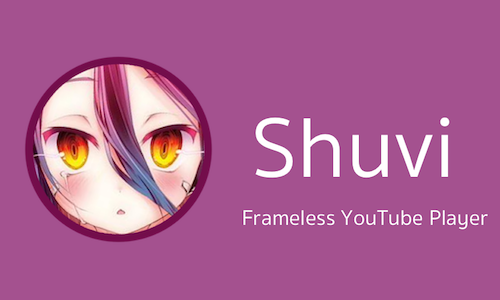Shuvi
フレームレスなYouTubeプレイヤー
Shuviの特徴は、設計そのもののシンプルさです。
MacのQuickTime PlayerのようなUIに、フレームレスなウィンドウを兼ね添えています。
Shuviは、大きさや形にとらわれることなく、リサイズすることができます。
ソースコードはGitHub上で公開。
2017/05/13
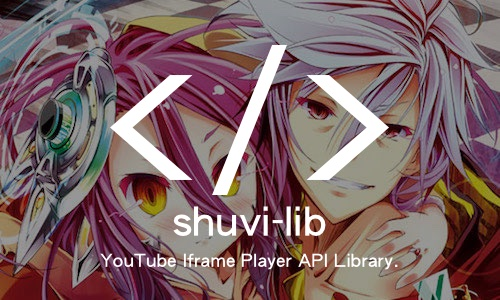shuvi-lib
YouTube_IFram_Player_APIをゆるふわにラッピングしたライブラリ
shuvi-libは、YouTube_IFrame_Player_APIをゆるふわにラッピングしたライブラリです。
shuvi-libを使えば、YouTube_IFrame_Player_APIをより簡単に操作することが可能です。
ソースコードはGitHub上で公開。
2017/05/14
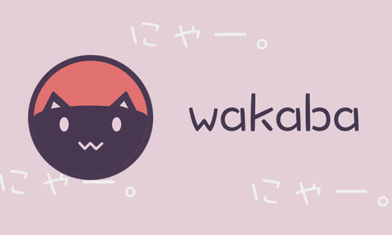若葉
PC画面上にコメントが流せるデスクトップアプリ
「若葉」は、PC画面上にコメントが流せるElectron製のデスクトップアプリです。
コメントはTwitterから特定のキーワードを含むツイートを取得して流します。
ソースコードはGitHub上で公開。
2017/03/19
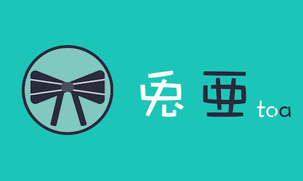兎亜
シンプルで可愛いミュージックプレイヤー
「ミュージックプレイヤーとしての最良の選択。」
選択したディレクトリ内のmp3ファイルを再生するという、シンプルな設計のソフトウェアです。
コンパクトなウィンドウサイズなので、デスクトップでの作業スペースを奪うことなく配置できます。
ソースコードはGitHub上で公開。
2017/04/08
音卵
声優ラジオ音泉をダウンロードするAndroidアプリ
音卵は、Cordovaで作られたAndroidアプリです。
声優ラジオ音泉をダウンロードすることが可能です。
Google Playにて公開。
ソースコードはGitHub上で公開。
2017/04/15
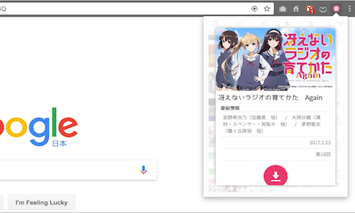音泉ダウンローダー
声優ラジオサイト「音泉」ダウンロード用Chrome拡張
声優ラジオサイト「音泉」の音声・動画ファイルをダウンロードするChrome拡張です。
APIサーバにはonsen-nodeを使用しています。
Chromeウェブストアにて公開。
ソースコードはGitHub上で公開。
2017/02/25
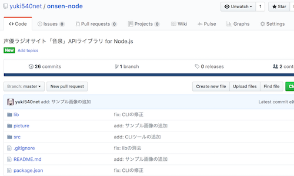onsen-node
声優ラジオ「音泉」APIライブラリ for Node
声優ラジオサイト「音泉」のAPIライブラリです。
「Node.js」から簡単に「音泉」の情報にアクセスすることが可能です。
コマンドライン上でも動作します。
ソースコードはGitHub上で公開。
2017/02/25
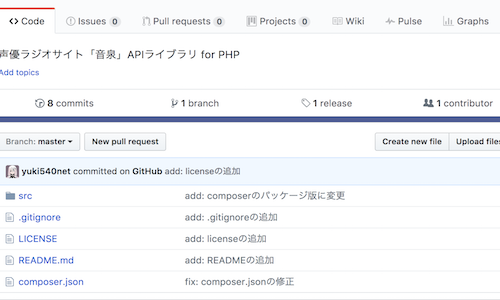onsen-php
声優ラジオ「音泉」APIライブラリ for PHP
声優ラジオサイト「音泉」のAPIライブラリです。
「PHP」から簡単に「音泉」の情報にアクセスすることが可能です。
ソースコードはGitHub上で公開。
2017/02/25
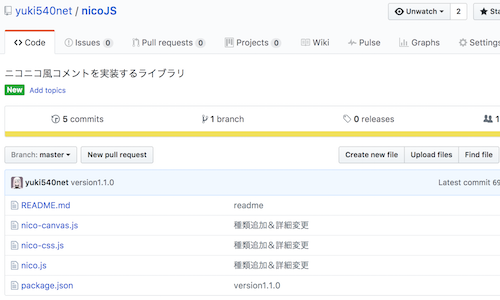nicoJS
ニコニコ風コメントを実装するライブラリ
ニコニコ動画風のコメントを実装するライブラリです。
Webサイトなどに簡単に組み込むことが可能です。
ソースコードはGitHub上で公開。
2016/09/25
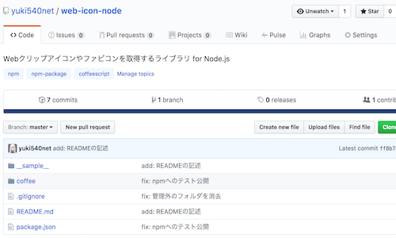web-icon-node
Webクリップアイコンを取得するライブラリ
Webクリップアイコンやファビコンなどのリンクを取得するライブラリです。
npm上で公開中。
Python・PHP版も公開予定。
ソースコードはGitHub上で公開。
2017/03/28
俺ガイル非公式サイト
「俺は、本物が欲しい。」
「やはり、俺の青春ラブコメはまちがっている。」の非公式サイトです。
俺ガイル好きのyuki540が衝動で作ったサイトです。
俺ガイルの世界観のような儚げなデザインが特徴です。
2016/03/20
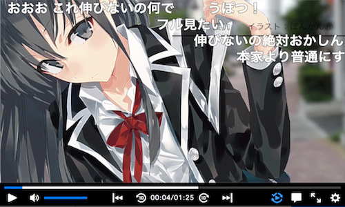COLORFUL_STEP
待ち望んだ全ては----そこにあるの
「やはり、俺の青春ラブコメはまちがっている。」のMADです。
動画編集に没頭していた頃の作品です。
曲はClariSの「STEP」で、静止画とアニメを組み合わせて、俺ガイルの世界観をカラフルに表現しています。
2016/03/20
Pixivの脆弱性を報告し、5000円＆5ptsの獲得
2017/06/20
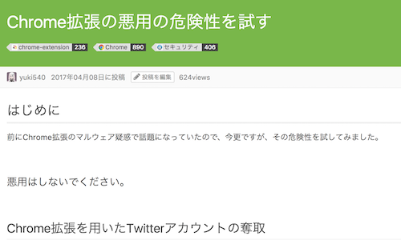Chrome拡張を用いたTwitterアカウントの奪取
2017/04/08
Live2Dライクなオープンソースソフトウェアの開発
2017/02/26
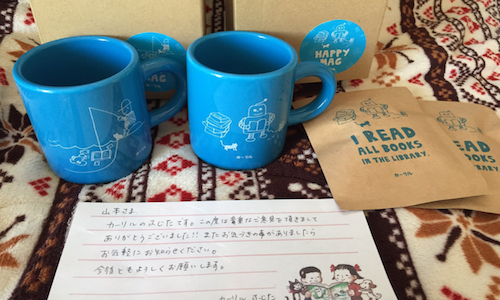日本最大の図書館検索サイト カーリルの脆弱性報告
2017/02/26